L’Association des pompiers volontaires de Gaspé
Fondée en 1977 · Volet social et communautaire
Mandat et historique
L’Association des pompiers volontaires de Gaspé a été fondée en 1977 par un groupe de pompiers, soit Ricky Sinnett, Carl Sinnett et Pierre Larivière. Ses buts sont de :
- regrouper les personnes qui se dévouent comme pompiers volontaires ou sauveteurs dans la ville de Gaspé;
- étudier, promouvoir, protéger et développer de toutes manières les intérêts matériels, culturels et sociaux de ses membres;
- organiser des réunions, des conférences et des échanges, et établir un secrétariat qui serve de lien entre les membres;
- établir et diriger un club social pour la récréation et la détente de ses membres et de leurs invités;
- acquérir, posséder et exploiter les biens meubles et immeubles nécessaires à ces fins, et offrir à ses membres et à leurs invités des services liés aux buts de la corporation.
À sa fondation, l’Association regroupait des membres de Gaspé et de Rivière-au-Renard. L’équipe de sauvetage s’y est jointe en 1983, les pompiers de Rosebridge en 1991 et ceux de Douglastown en 1992. Depuis 1986, Gaspé et Rivière-au-Renard ont chacune leur association.
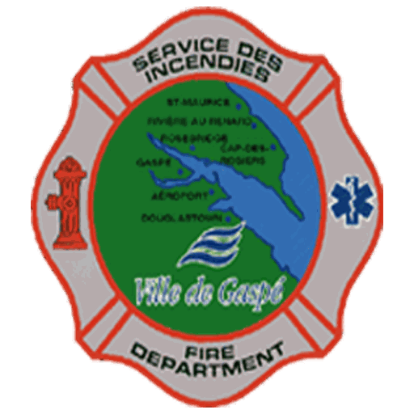
Depuis ses débuts, l’Association réalise des projets et amasse des fonds pour acquérir de l’équipement au profit du Service incendie. La valeur des équipements remis à la Ville dépasse 300 000 $.
Équipements acquis par l’Association
- Véhicule de sauvetage Ford 1972
- Motoneige Bombardier Nordic 50
- Mannequins de réanimation cardiorespiratoire
- Compresseur
- Échelle pliante de sauvetage
- Vidéos (2)
- Radios CB
- Équipement de recherche
- Escaladeurs
- Mâchoires de vie
- Téléavertisseurs de sauvetage (10)
- Trois séries de vestes
- Trousse de premiers soins
- Un aéroglisseur
- Tente 10 × 15
- Bateau Zodiac, vestes, avirons et remorque
- VTT 6 × 6 Polaris avec treuil et casques
- Treuil
- 2 traîneaux de transport de personnes
- 4 traîneaux pour motoneige
- Téléviseurs (2)
- Raccords pour bouteilles de plongée
- Équipement pour matières dangereuses
- Cordes de 300 pi
- Lampes de poche Maglite pour pompiers
- Chemises de sauvetage (1984)
- Insignes de pompier en métal
- Un camion de pompier
- Un bateau Zodiac à coque rigide
- Poste de commandement mobile
Pour amasser ces fonds, les pompiers ont organisé de nombreuses activités-bénéfice : soupers spaghetti et smoked meat, bingos, déjeuners, brunchs, ventes de hot-dogs. Ils ont aussi joué le rôle de victimes lors d’exercices de la Régie régionale et assuré la sécurité lors d’événements d’envergure.
Le bénévolat est au cœur de leur engagement. Au fil des ans, ils ont repeint trois camions, aménagé l’intérieur de deux véhicules d’urgence et installé une pompe PTO sur le camion-citerne. Lors des Jeux du Québec de 1993, ils ont cumulé 4 000 heures de garde (24 h sur 24) dans les écoles et arrosé, pendant six semaines, les pelouses des sites de compétition. Ils sont présents lors des grands événements pour assurer la sécurité de la population : Mirage sur la banquise, Triathlon du bout de la terre, spectacles, collectes de sang, Régates de Gaspé, Tour de la Baie à vélo et autres.
En 1999, l’Association a célébré les 70 ans du Service incendie et invité les anciens pompiers à se joindre à elle. En 2007, elle comptait plus de 80 membres : pompiers, sauveteurs et anciens pompiers.
Jusqu’en 1999, l’Association veillait aussi aux conditions de travail des pompiers. Ce mandat a changé lorsque les pompiers ont adhéré à un syndicat en 1999. Depuis 2004, à la suite de la dissolution de ce syndicat, l’Association continue de suivre les conditions de travail, mais c’est un regroupement de tous les pompiers de la Ville de Gaspé — aujourd’hui le Regroupement des pompiers volontaires du Grand Gaspé — qui négocie l’entente de travail avec la Ville. La Ville a signé une première entente de travail avec les pompiers en avril 2006.
Présidences successives
- Richard Sinnett
- Bernard Morin
- Léo Kenny
- Marco Dubé
- Linda Ferguson
- Michel Morin (par intérim)
- Mark Sinnett
- Ryan Sinnett
- Jean-François Lévesque
- Michel Morin
- Sylvain Leblanc (par intérim)
- François Charbonneau
Activités
L’Association organise régulièrement des activités récréatives et familiales pour ses membres, et coordonne ou appuie chaque année :
- des déjeuners-bénéfice pour des causes communautaires et humanitaires et pour le financement d’équipements;
- la sécurité et les premiers soins lors d’événements communautaires (concerts, marathons et autres);
- les défilés de l’Halloween, de Noël et autres;
- un 5 à 7 pendant la Semaine de l’action bénévole;
- le souper de homard;
- le Noël des enfants;
- le souper de Noël.
Mérites et prix
Pompier de l’année
Chaque année, une plaque est remise au pompier qui, selon la direction du Service, s’est démarqué au cours de l’année. Cette plaque a été offerte au Service incendie par Romuald Ste-Croix et est présentée au lauréat par la direction du Service.
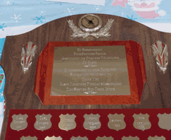
| Année | Lauréat(s) |
|---|---|
| 2019 | Marie-Michèle Quirion |
| 2018 | Nicolas Pruneau |
| 2017 | Sophie Fortier |
| 2016 | Victor Jr. Cassivi |
| 2015 | Harris Normand |
| 2014 | Dennis Sinnett |
| 2013 | Sylvain Girard |
| 2012 | Sylvain Girard |
| 2011 | Johanne Ferguson |
| 2010 | Emmanuelle Poirier |
| 2009 | Denise Ouellette, Yolaine Arsenault, Sylvie Cotton, Johanne Ferguson |
| 2008 | Adam Normand |
| 2007 | Gaétan Girard |
| 2006 | Jérôme Grand’Maison |
| 2005 | Dennis Sinnett |
| 2004 | Jean-François Lévesque |
| 2003 | Tasha Adams |
| 2002 | Paul Bois |
| 2001 | Roger Cléments, Johanne Ferguson |
| 2000 | Dwight Sinnett, Ryan Sinnett |
| 1999 | Lisa Morin |
| 1998 | Johanne Ferguson |
| 1997 | Roger Cléments |
| 1996 | Linda Ferguson |
| 1995 | Léo Kenny |
| 1994 | Léo Kenny, Linda Ferguson |
| 1993 | Michel Morin |
| 1987 | Carl Sinnett |
| 1986 | Carl Sinnett |
Officier de l’année
Ce prix rend hommage au lieutenant Dennis Biard, officier du SSIG décédé dans l’exercice de ses fonctions lors d’un entraînement. Leader et entraîneur reconnu, il se distinguait par la qualité de son travail, l’excellence de son service et son dévouement remarquable.
Remis depuis 2011 à un officier ayant fait preuve, au cours de l’année, de leadership, d’engagement et d’un sens du devoir exemplaires, ce prix est un don de la conjointe et du fils de Dennis, Linda Ferguson et Dave Ferguson Biard. La première année, ils ont remis la plaque au directeur, Carl Sinnett, un collègue très apprécié de Dennis; depuis, la direction du Service la remet à l’officier qu’elle juge digne.
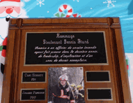
| Année | Lauréat(s) |
|---|---|
| 2019 | Jean-Marc Lemieux |
| 2018 | Peter Patterson |
| 2017 | Gaétan Girard |
| 2016 | Marc Dubé |
| 2015 | Denise Ouellette |
| 2014 | Ryan Sinnett |
| 2013 | Linda Ferguson |
| 2012 | Johanne Ferguson |
| 2011 | Carl Sinnett |
Club « Amis des pompiers »
La plaque « Ami des pompiers » est remise par le chef du district sud à une personne ou à un organisme qui a contribué à l’avancement et au développement de notre service incendie. Un ami des pompiers, c’est une personne exceptionnelle qui, par son dévouement, son appui et son aide, a fait progresser notre service. Un ami des pompiers, c’est pour la vie.
2004
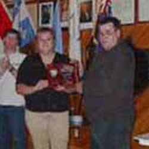
2003
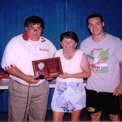
2002
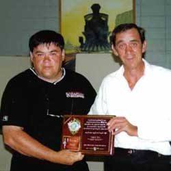
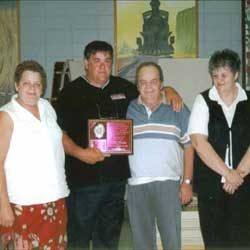
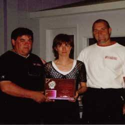
2001
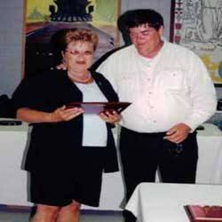
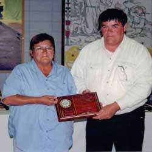
1999
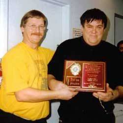
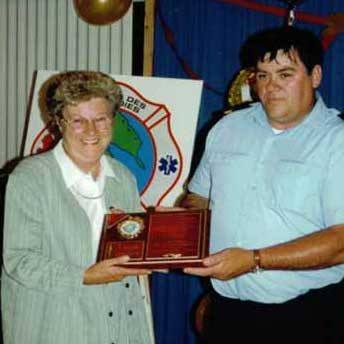
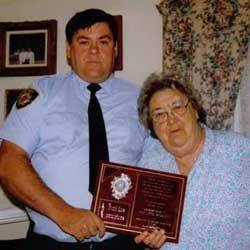
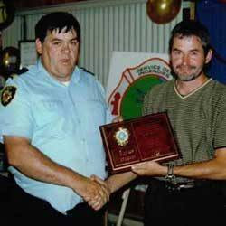
1998
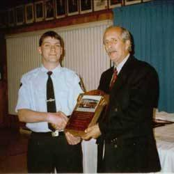
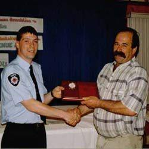
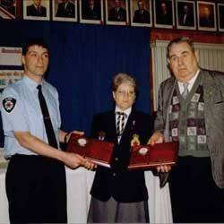
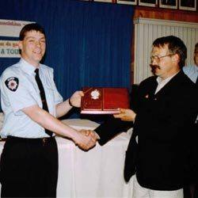
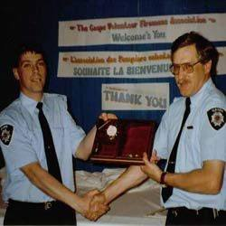
In memoriam
Montages réalisés par Johanne Ferguson, membre du Service incendie, à la mémoire de nos membres décédés.

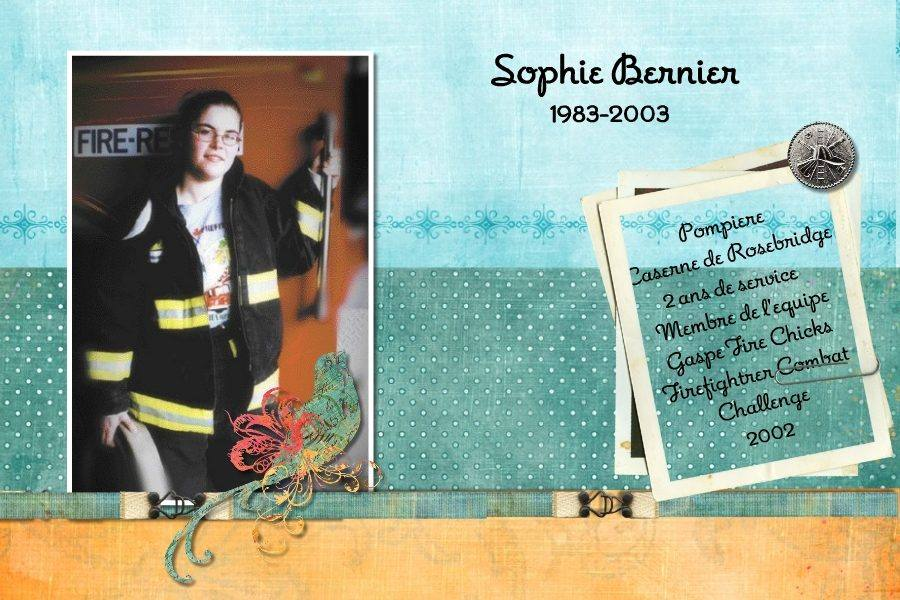

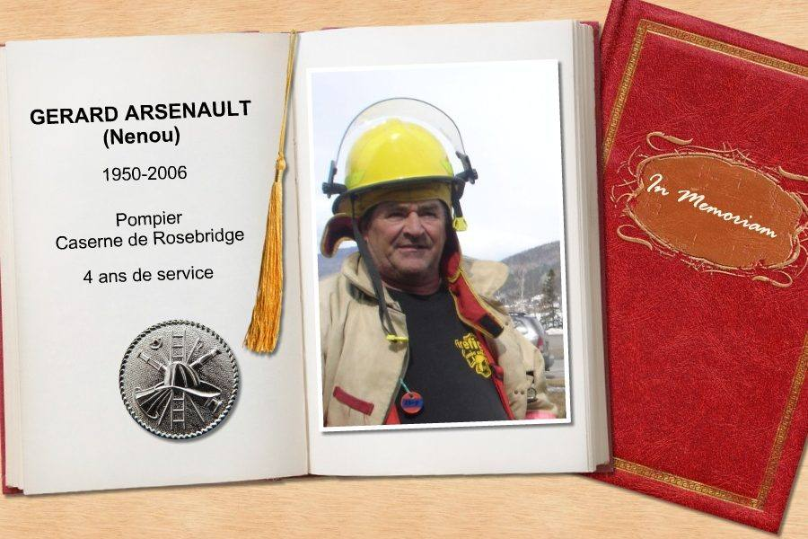

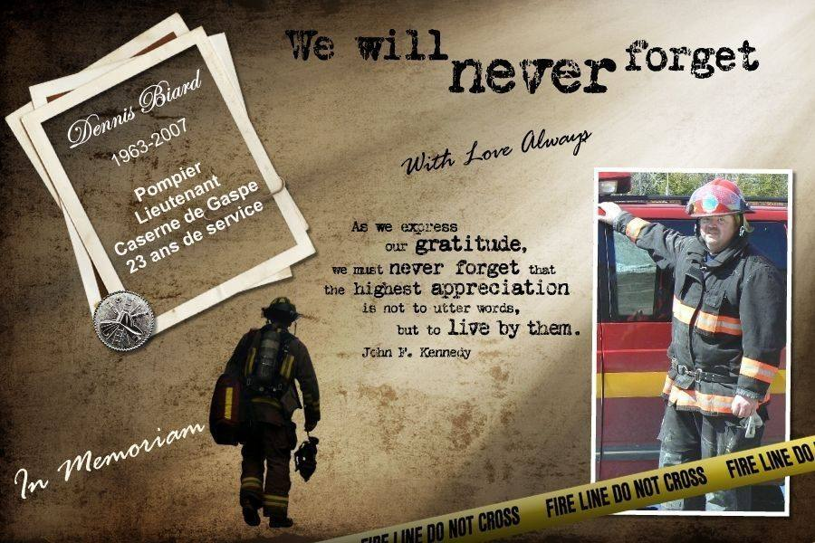

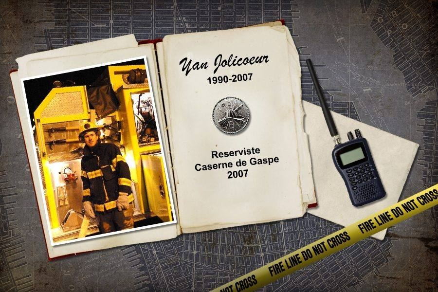

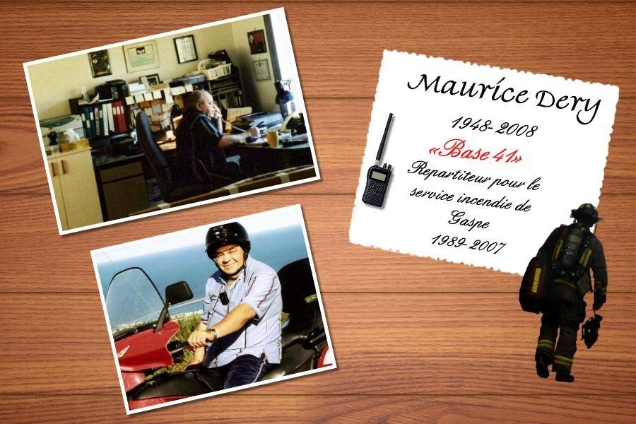
Conseil d’administration
- Bruno Lévesque, président — bruno.levesque@incendiegaspe.com · (418) 361-2359
- Simon Bujold, secrétaire — simon.bujold@incendiegaspe.com
- Gaétan Girard, trésorier — gaetan.girard@incendiegaspe.com · (418) 361-5911
146, boul. de Gaspé, Gaspé (Québec) G4X 1A9
Devenir membre du Service
Vous souhaitez vous joindre au Service de sécurité incendie de Gaspé?
Recrutement